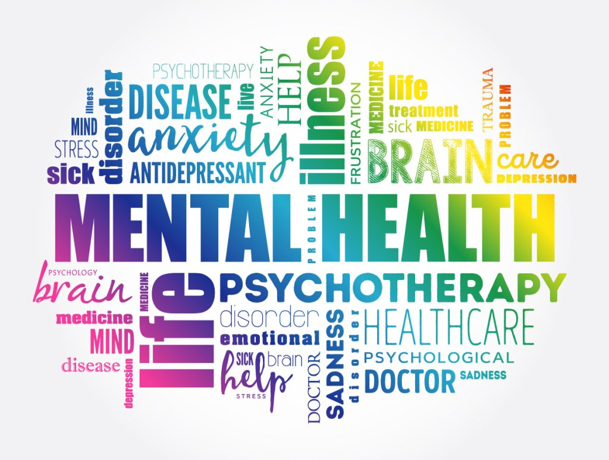

.png)

Mental Health Issue: Pengertian, Jenis, Penyebab, dan Gejalanya
20/12/2022 • 6 MIN READ
Pernah dengar istilah mental health issue? Atau bahkan sering mengucapkan 'kena mental'? Dua kalimat tersebut sering digunakan candaan untuk menggambarkan situasi kaget yang dialami seseorang sehingga membuat jiwanya terguncang.
Jika hanya kaget sesaat dan terjadi dengan intensitas yang cukup jarang, maka hal tersebut bukanlah masalah serius. Namun, jika kamu sering mengalami hal tersebut, sebaiknya segera mendatangi tenaga profesional untuk berkonsultasi. Hal ini juga dilakukan agar tidak melakukan self-diagnosis terkait psychological disorder yang kamu alami.
Apa, sih, mental health issue itu? Bagaimana gejalanya? Gangguan apa aja yang masuk kategori itu? Yuk, simak penjelasannya.
Pengertian Mental Health Issue
Mental health issue adalah gangguan kesehatan mental yang mempengaruhi pikiran, perasaan, dan perilaku seseorang. Gangguan ini bisa terjadi pada siapa saja, tanpa memandang usia, jenis kelamin, atau latar belakang sosial. Gangguan ini juga bisa terjadi pada siapa saja, termasuk kamu.
Gangguan ini dimulai dari gangguan ringan hingga berat yang mengakibatkan seseorang membutuhkan penanganan serius.
Secara umum, mental health issue ditandai dengan beberapa gejala yang meliputi:
- Perubahan mood yang drastis
- Perubahan perilaku yang tidak biasa
- Perubahan pola tidur
- Perubahan pola makan
- Perubahan pola berpikir
- Perubahan pola emosi
Jenis Mental Health Issue
Setidaknya ada sekitar 200 jenis mental health issue yang diketahui berdasarkan gejala dan tingkat keparahannya. Namun, ada beberapa gangguan mental yang paling umum ditemui yaitu:
1. Anxiety atau Gangguan Kecemasan
Gangguan kecemasan adalah kondisi di mana seseorang merasa cemas, takut, atau khawatir berlebihan terhadap sesuatu yang sebenarnya tidak berbahaya. Kondisi ini bisa terjadi dalam jangka waktu yang lama dan mengganggu aktivitas sehari-hari.
2. Depression atau Gangguan Depresi
Gangguan depresi adalah kondisi di mana seseorang merasa sedih, kehilangan minat, atau kehilangan semangat dalam melakukan aktivitas sehari-hari. Kondisi ini bisa terjadi dalam jangka waktu yang lama dan mengganggu aktivitas sehari-hari.
3. Bipolar Disorder atau Gangguan Bipolar
Gangguan bipolar adalah kondisi di mana seseorang mengalami perubahan mood yang ekstrem, yaitu dari mood yang sangat senang hingga mood yang sangat sedih. Kondisi ini bisa terjadi dalam jangka waktu yang lama dan mengganggu aktivitas sehari-hari.
4. Schizophrenia atau Skizofrenia
Skizofrenia adalah kondisi di mana seseorang mengalami gangguan pikiran, perasaan, dan perilaku yang tidak sesuai dengan realitas. Kondisi ini bisa terjadi dalam jangka waktu yang lama dan mengganggu aktivitas sehari-hari.
5. Obsessive-Compulsive Disorder atau Gangguan Obsesif-Kompulsif
Gangguan obsesif-kompulsif adalah kondisi di mana seseorang mengalami obsesi atau pikiran yang berulang-ulang dan kompulsi atau tindakan yang berulang-ulang. Kondisi ini bisa terjadi dalam jangka waktu yang lama dan mengganggu aktivitas sehari-hari.